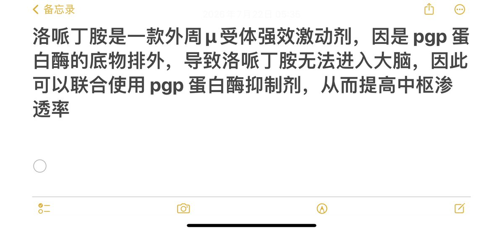
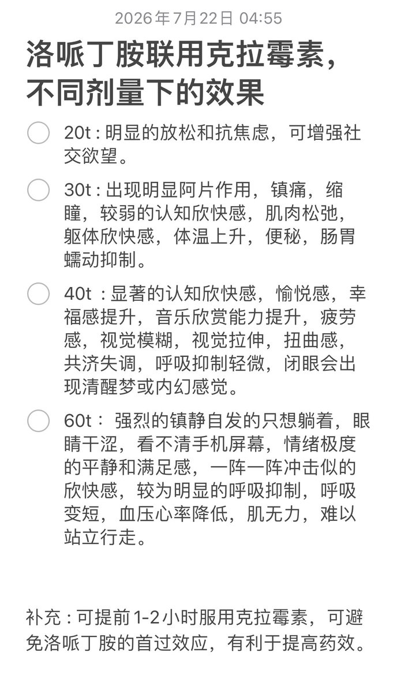
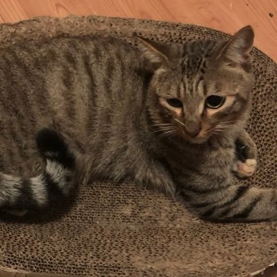

如月 末🍥🏳️⚧️（💕チャウシェスク夢女子💕）
@KisaragiSue
太奇异搞笑了，为了这么弱的μ阿片受体结合效果吃这么巨量的药物还包含抗生素。真彻底o到脑萎缩了？复方可待因药物随便一个医院都能开，搁这用这种方式玩命体验阿片快感是表演行为艺术吗？



κ
@Nzstz53
可网购且合法的具有滥用潜力的“阿片类药物”
从一月份到现在，一共磕了50多盒实测洛哌丁胺130mg 以下几乎没有心脏毒性，那些磕猝死的基本都是200-400mg 加上奎尼丁的心脏毒性叠加导致的
1参考文献：https://t.co/LqVKWv2ZIv…
2 : https://t.co/jwG8gl0Gjw https://t.co/0tOVioxPZS